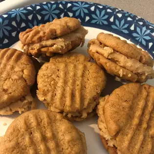

Peanut Butter Cookies

Description
A super easy recipe to make some classic cookies (and my personal favorite)
Ingredients
- 1/2 cup of unsalted butter
- 1/2 cup of white sugar
- 1/2 cup of packed brown sugar
- 1/2 cup of creamy peanut butter
- 1/2 teaspoon of kosher salt
- 1/2 teaspoon of baking soda
- 1 egg
- 1 1/4 cups of all-purpose flour
Steps
- Beat butter, white sugar, brown sugar, peanut butter, salt, baking powder, and baking soda in a stand mixer until smooth.
- Scrape down the sides of the bowl and beater with a spatula. Add egg and mix for about 1 minute.
- Slowly mix in flour with the mixer on low. Scrape down the sides of the bowl and beater. Mix on medium until combined, about 30 seconds.
- Form dough in to a ball, cover with plastic and refrigerate for 2-3 hours.
- Preheat the oven to 375 degreed F (190 degrees C).
- Portion out cookie dough in equal-sized balls on a baking sheet covered with a silicone baking mat. Use damp hands to roll dough into smooth balls. Stamp each ball with a fork in a criss-cross pattern.
- bake in the preheated oven for 10 minutes until golden.
- Leave on the baking sheet for 5 minutes before transferring to a cooling rack.